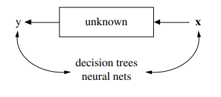

Assignment 1
On Shmueli and Breiman
A Comparative Overview
“As Arthur Conan Doyle’s Sherlock Holmes put it in ‘A Scandal in Bohemia’, ‘It is a capital mistake to theorize before one has data.’ - (Deutsch 2012, 15)
Statistics, when considered as a branch of reasoning, is occasionally harangued in the everyday world as being a worse base for forming conclusions than proverbial ‘lies, and damned lies’. Of course, the undertone of the sentiment is often to simply convey a gentle reminder about the dishonest (or at least incorrect) use of statistical tools to imply associations that are unsupportable on a sounder basis of application. A dichotomous lesson many first receive in an introductory statistics course while pursuing studies at an institution of higher education.
Of course, the argument over the soundest basis for the use of statistical tools has a more rarefied pedigree within academia itself. Especially as regards their application in the social sciences. In this data-driven century, which comfortably weaves patterns of information out of the historically unparalleled petabyte range (Daoud and Dubhashi 2023, 27), what can best be conceptualized as schools of thought have emerged with competing understandings of the proper foundations and appropriate spheres of application of statistical methods (Daoud and Dubhashi, 2023). Two prominent instalments of this debate will be surveyed here. Namely, Leo Breiman’s 2001 article Statistical Modeling: The Two Cultures and Galit Shmueli’s 2010 paper To Explain or to Predict?.
The issue, as per usual, starts at the beginning: What is the purpose of doing statistics? The answer, according to Breiman, is to contribute to the advancement of science by allowing us to make predictions (Breiman 2001, 11–12). He mentions how in the private-sector, the only value of statistical analysis rests on its predictive accuracy (2001, 3-4). In other words, a statistic’s worth lies in the results it actuates. He also observes that, in contrast, academics involved in the pursuit of scientific knowledge typically value statistical tools for their ability to provide an interpretable, causal model of some phenomena under study (Breiman 2001, 4–5).1 Perhaps even ignoring matters of predictive strength (or lack thereof) in favour of “the construction of an ingenious stochastic model.” (2001, 5).
Now, the epistemological underpinnings that Breiman is alluding to come clearly into the fore in his construal of why different practitioners value different criteria to adjudicate the ends of the scientific enterprise. Breiman sees the differing teleological visions of the two ‘camps’ of practitioners to be essentially conceptual instantiations of the properties of the tools they use to advance each other’s conception of knowledge (Breiman 2001, 1). Traditional statistical analysis often involves the use of linear parametric2 models that are presumed to represent the phenomena that are the origin of the data that is available to study (Breiman 2001, 1, 4–5, 6). These models are often chosen independently of the data under consideration and then tested against various goodness-of-fit measures (2001, 4). Breiman expresses credulity that anyone could seriously believe that such limited models, supposedly chosen because of their ease of manipulation and understanding (Breiman 2001, 4–6), would necessarily describe much of the complicated nature of reality (2001, 4-5). Here, he attacks the classical presumption of traditional modelling on its own terms. In essence, arguing that even if classical modelling’s focus on finding the ‘real’ nature of data-generating processes (Breiman 2001, 1) were the most fruitful goal of scientific inquiry, simple parametric models are not going to get anyone very far.
Indeed, Breiman believes that classical research has run up against the limits of such methodologies3 due to the preponderance of larger and more complicated data sets that have become available since the digital age (Breiman 2001, 6, 8). Responding to the (traditional statisticians) hammer and (parametrically subsumable) nail analogy, he notes: “The trouble for statisticians is that recently some of the problems have stopped looking like nails.” (2001, 6). He vouches for a range of modern, computationally powerful tools as providing a path forward that he subsumes under the nomenclature of the “Algorithmic Modeling Culture”, AMC, as opposed to consigning traditional academics to a “Data Modeling Culture” or DMC (2001, 1).
 Breiman’s idealized model of exploration via AMC (2001, 1).
Poignantly, Breiman holds that the best models are those that provide the highest predictive accuracy, such as neural nets, random trees (or ‘forests’ composed of them), and support vector algorithms (2001, 9-11). He notes that despite their impenetrability to easy (or any) understanding, such ‘black box’ processes are to be preferred to more traditional (parametric) ones because “The goal is not interpretability, but accurate information.” (Breiman 2001, 12). To bring the point home, in response to traditional objections to using such complicated algorithmic tools because they do not lend themselves to interpretability, he notes the “…wrong question is being asked.” (2001, 11)
In contradistinction, Galit Shmueli focuses not on the merits of DMC or AMC cultures per se but more on the rationale for the different enterprises of predicting new data and explaining currently existing data sets and the resulting impact of an asymmetrical focus on their distinction (Shmueli 2010, 1, 16). Shmueli organizes his thesis around an axis of bifurcated aspects of modes of ‘doing statistical analysis’: ‘Causation–Association’, ‘Theory–Data’, ‘Retrospective–Prospective’, and ‘Bias–Variance’ (2010, 5). Explanatory modelling and predicative analysis4 are conceptually situated opposite to each other in every pair of this scheme, in order to reveal their fundamental differences of modality (2010, 5).
For starters, explanatory modelling is supposed to specify all the relevant variables that are assumed to cause an outcome(s) of interest, as well as undergird the causal pathways as of to how the variables cause those outcome(s) (Shmueli 2010, 2). He notes that in many disciplines, mere association-based tools5 such as regression analysis are used on data for “testing causal hypotheses about theoretical constructs” (2010, 2-3). Meaning that ‘extra-modular’ inferences must buttress the theory.6 Therefore, following his axis paradigm in explanatory modeling (2010, 5):
1) Causation channels are supposed to be captured by some sort of statistical model from which to draw conclusions of ontological significance (an act of inference)
2) This model is often constructed with theoretical considerations in mind
3) The focus is on data that already exists and
4) It focuses on minimizing bias in order to properly undercover the magnitude of various variables.
The intrinsic value of such an approach is, therefore, assumed to lie in its ability to cohere data into a story the human mind can appreciate. As theoretical physicist David Deutsch remarks in the conclusion to the quote that opened this article:
“But that was itself a capital mistake. We never know any data before interpreting it through theories.” - (Deutsch 2012, 15)
Predictive modelling, on the other hand, via the same axis is (Shmueli 2010, 5, 11):
1) Concerned primarily with associations, whatever their real underlying relationship
2) Estimates a model drawn from the data and not independently from it
3) Is focused on future, currently non-existent data and
4) Is willing to incur bias if need be in order to improve estimation.
In concurrence with Breiman, Shmueli mentions that predictive modelling is able to take advantage of a “…range of plausible methods [that]7 includes not only statistical models (interpretable and uninterpretable) but also data mining algorithms.” (2010, 10). Even if those algorithms “… are considered ill-suited for explanatory modeling.” (2010, 10).
Where Shmueli shines a spotlight, however, concerns the fact that an explicit recognition of the distinction in conditions required for the different types of analysis has not always been appreciated in the literature (Shmueli 2010, 6, 16). A state of affairs that has led to an arguable loss to scientific progress, not only due to matters of epistemological rectitude but because the contributions that algorithmic/predictive modelling could make to explanatory modelling has gone underappreciated (2010, 16-18). Shmueli pleads that “by producing high-accuracy price predictions they shed light on new potential variables that are related to…the types of relationships that can be further investigated in terms of causality.” (2010, 16). In contrast to Breiman’s championing of AMC over DMC practices (Breiman 2001, 16), Shmueli sees a role for the ‘two cultures’ to work together - although, to reiterate, he is also convinced that traditional statistical practice has harmed itself by not more proactively embracing the new tools provided by predictive algorithms (Shmueli 2010, 16).
In the conciliatory respect, Shmueli has company with Adel Daoud and Devdatt Dubhashi, whose article Statistical Modeling: The Three Cultures acts as a partial rejoinder to Breiman’s and advocates a path not dissimilar to that Shmueli does. They argue that Breiman does not provide an argument as of to why predication advances scientific progress (Daoud and Dubhashi 2023, 30) and aim to provide their own counterargument that ends up aligning with some of the aforementioned positions staked out by Shmueli (Shmueli 2010, 18–22, 24–27, 32). Daoud and Dubhashi argue that rather than best considered as antagonists to explanatory frameworks at the other end of a hostile spectrum,8 that the methods of algorithmic learning models have developed a synergetic coupling with explanatory modelling among some researchers (2023, 17). This has led to the formation of what they term a hybrid modelling culture, or HMC (2023, 3, 5, 17).
They reason this culture has flourished because it can offer a new alley-way for traditional causal frameworks9 to expand the range of potential pathways that can be brought into their service via machine-learning/prediction algorithms (2023, 5, 33-34). While they point out that isolated approaches of either vein are useful for certain problems (2023, 16, 27, 32), and HMC type approaches come with their own potential problems (34), they believe that the most lucrative direction for the applied social sciences lies in utilizing the strength of algorithmic modelling to better complement the goal usually left to more traditional statistical inference (35).
Traditional inference concerns such as endogeneity (Shmueli 2010, 9–10) and the struggle to ‘operationalize’ estimators of population parameters (2010, 2, 14-15, 19) will likely still occupy researchers time even if adoption of learning-based algorithms becomes widespread. However, it seems fair to concede that problems related to systemic errors (Daoud and Dubhashi 2023, 27–18) on the scales only possible to encounter with ever larger data sets will probably be better solved by aiding the ‘mind’s eye’ with a large number of relatively blind but perhaps further seeing algorithmic ones.
Looking towards an ever more data-rich world and very a human desire to understand it, let us hope the words of one researcher are heeded:
“Ignorance is inevitable; let’s make it not quite so painful.” - (Huntington-Klein 2022, 162)
References
Footnotes
As well as because truly verifiable, measurable, randomized introductions of exogenous variables (experiments) are hard to come by ‘in the wild’, especially in the social sciences (see footnote 6), and causal perturbation effects need to be identified by accounting (‘controlling’) for possible missing/hidden variables (Huntington-Klein 2022, ch. 4, 8-11, passim). A task that can therefore be aided considerably if it can be assumed the underlying relationships are described by a well-defined parametric model.↩︎
Essentially, a model whose structure is presumed in advance, hence making for a more simplified grasp of reality (Hoskin n.d.).↩︎
These limits are arguably always there anyway, in a sense that has been recognized for centuries: “But philosophers, who carry their scrutiny a little farther, immediately perceive, that, even in the most familiar events, the energy of the cause is as unintelligible as in the most unusual, and that we only learn by experience the frequent CONJUNCTION of objects, without being ever able to comprehend any thing like CONNEXION between them.” - (Hume et al. 1993, 52)↩︎
He also focuses on purely descriptive analysis, see (2010, 3).↩︎
“Whereas “proper” statistical methodology for testing causality exists, such as designed experiments or specialized causal inference methods for observational data…” (2010, 3).↩︎
“In complex situations—and most social science is about highly complex situations—we may well not know very much about what the causal…looks like.” - (Huntington-Klein 2022, 161)↩︎
Italics mine.↩︎
It is important to note that Shmueli also sees the antagonism as fairly historic in nature and views the two approaches as more of a set of potentially complimentary dimensions (2010, 17).↩︎
They take the ‘hypothetico-deductive’ method as the central one (Daoud and Dubhashi 2023, 5)↩︎